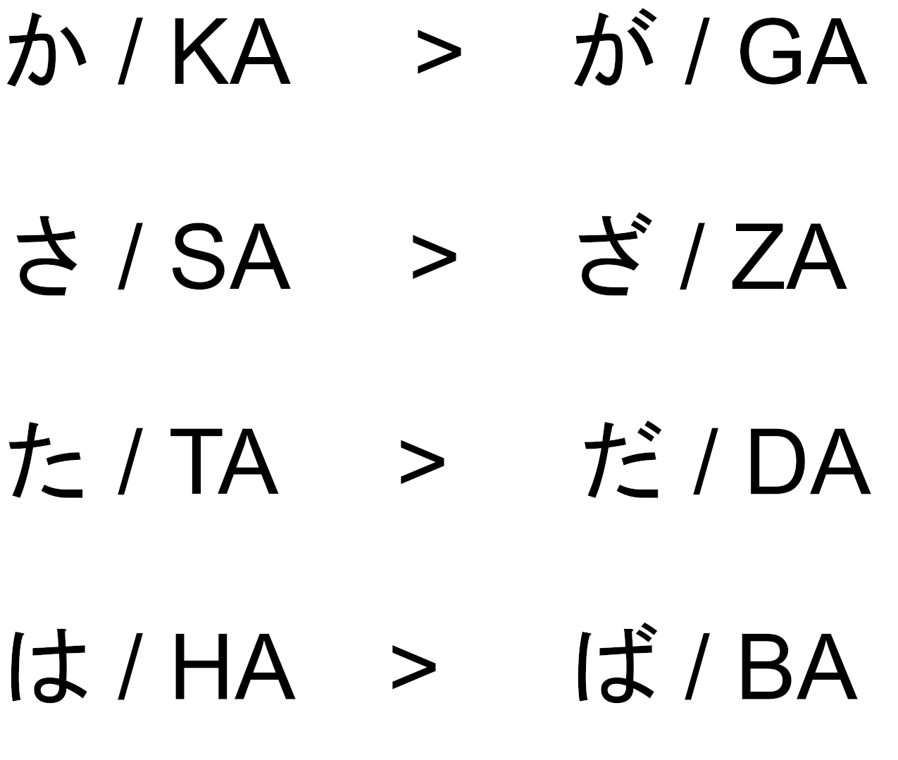
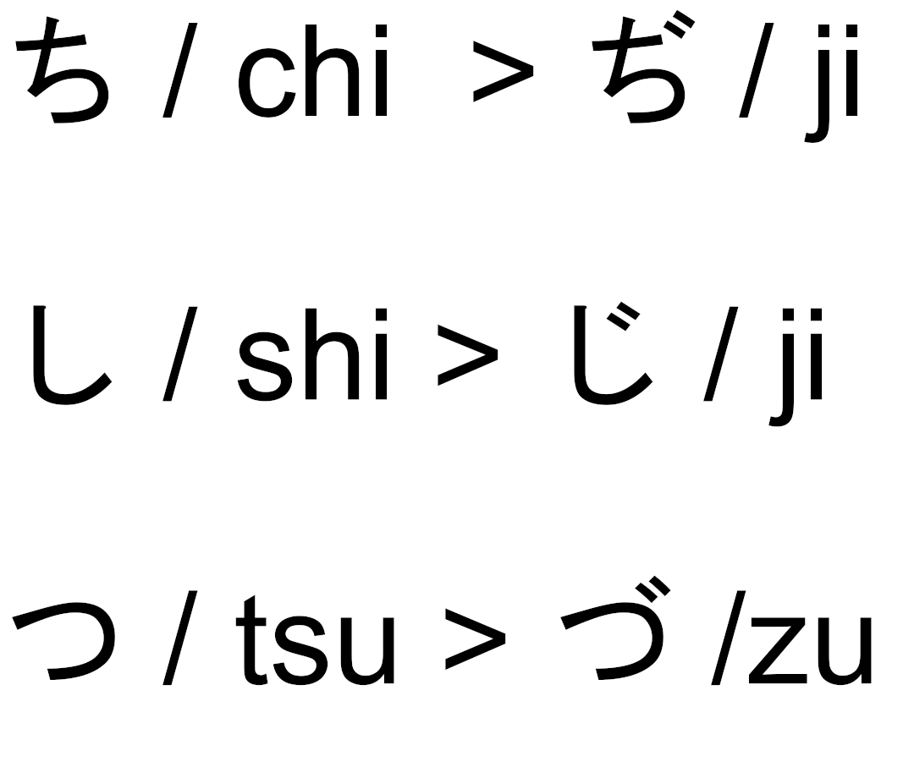
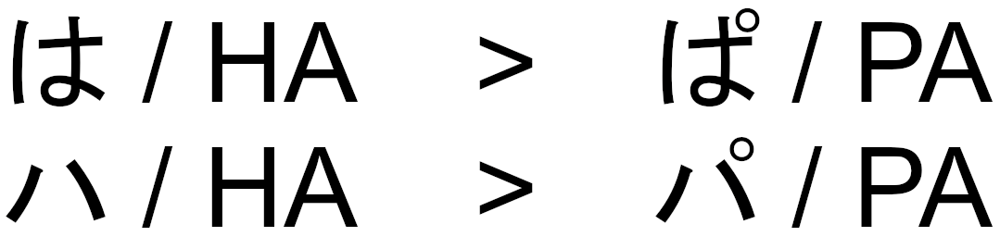
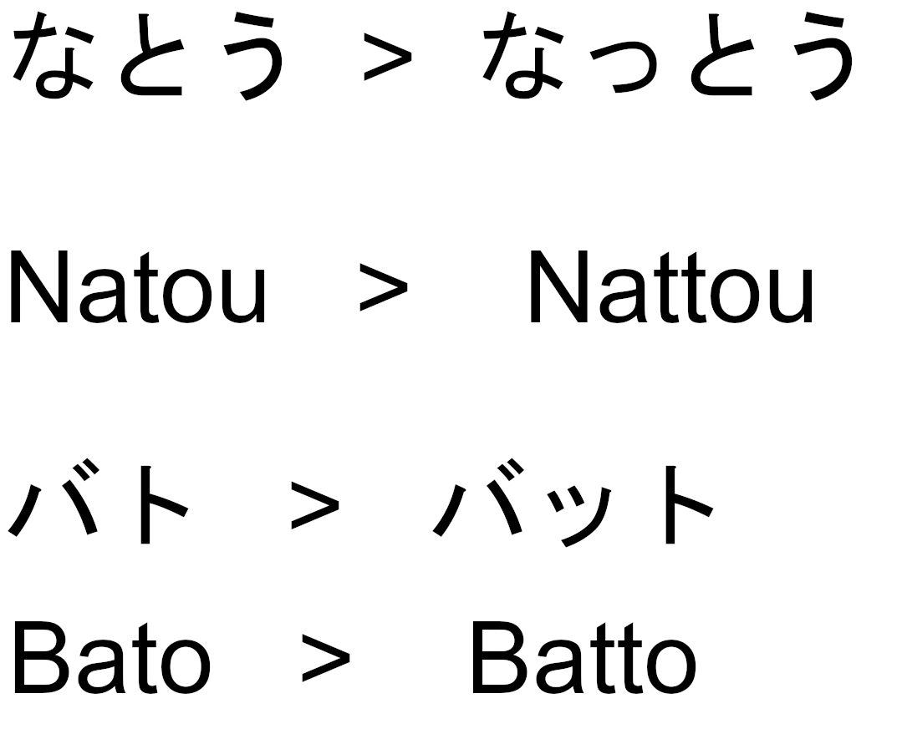
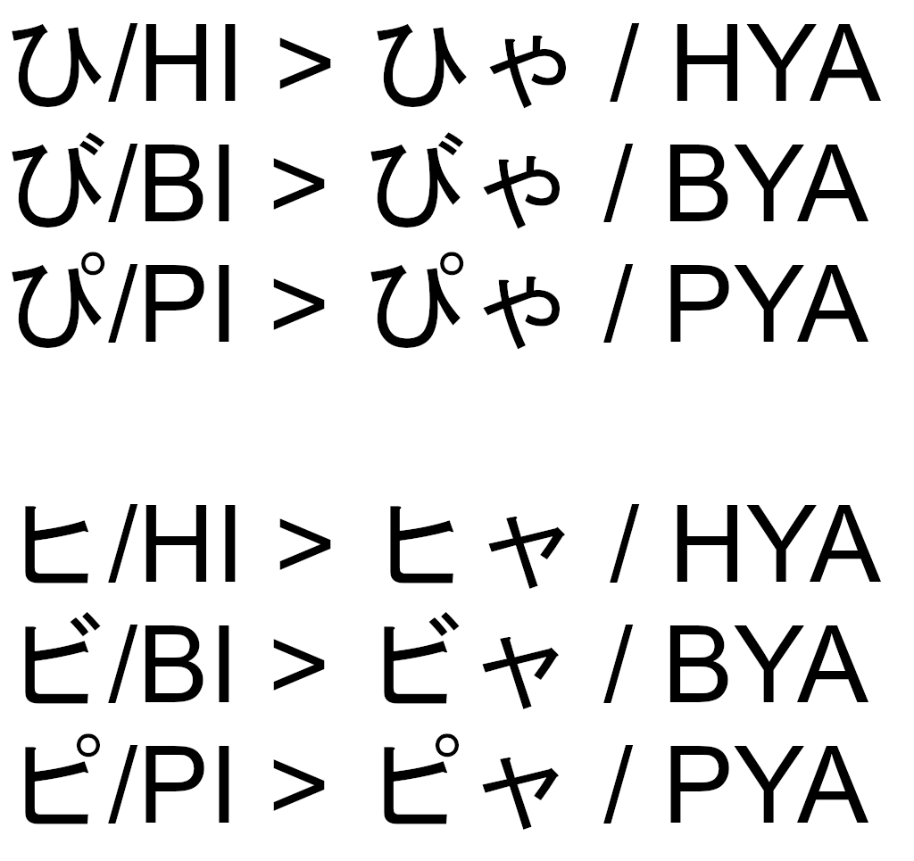
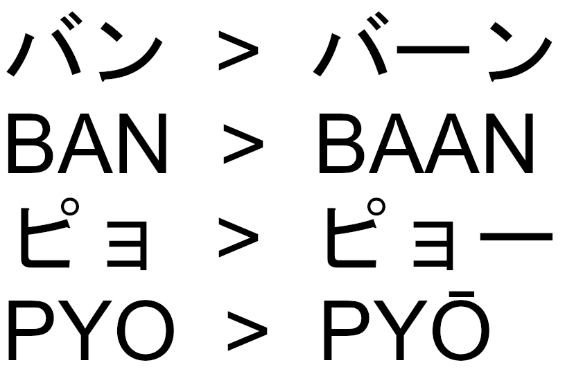
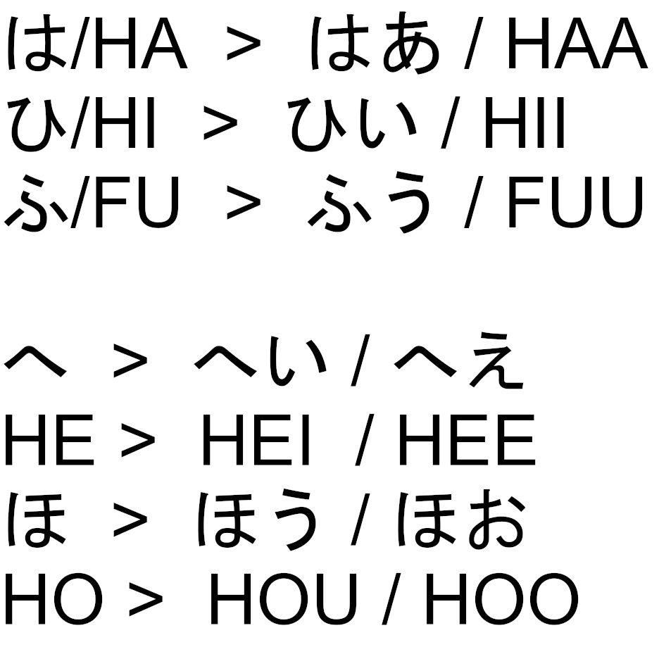

What is Kana?
Kana is the name for two of the three japanese alphabets, Katakana and Hiragana, the third being Kanji. Hiragana and Katakana function nearly the same as the Latin alphabet, they are syllabaries, i.e. characters contained in them represent sounds and do not have meanings of their own. Each one consists of 46 characters, each one corresponding to a unique open syllable, with the exception of “n”, which is also included in both. The Kana alphabets are organized into rows corresponding to the consonant at the start of the syllable (a, ka, sa, ta, na, ha, ma, ya, ra, wa, n) and columns corresponding to the vowel at the end (“a”,”i”,”u”,”e”,”o”), although the layouts may be different in some sources due to aesthetic choices.
What's The Difference?
Hiragana and Katakana may seem similar due to the fact they work nearly identically, just with different characters for the same syllable, but their functions are completely different from each other.
Hiragana
Hiragana is used for writing native Japanese words, as well as particles. It is also used to write words as part of a grammatical structure. Other words are often written with Hiragana when we don’t know the Kanji for that word or when the word is distinct / common and does not need to be specified through Kanji. (for example: “今晩は” / “konbanwa”, meaning “good evening”, may be written as “こんばんは”, as it is a common phrase without many words that would sound similar.).
Katakana
Katakana is used for writing foreign words. An example of this is “バス” / “basu”, which simply means “bus” and has been borrowed from English. Due to the nature of Japanese, with one of its properties being almost solely using open syllables, many such loanwords sound distorted to the ear of an outsider, many finding the japanified pronunciation weird or funny. However, this phenomenon is necessary for ease of speaking, as it is much easier to incorporate these distorted words into a sentence while speaking Japanese.
Voiced Consonants
The Kana alphabets have a feature for voicing consonants - the "Dakuten", and one for producing the "P" sound - the "Handakuten".
As You may have noticed after looking at the characters on the Learning Page, there are 11 rows of characters, each corresponding to a consonant (k, s, t, n, h, m, j (as in “ya”), r, w, n ) with the exception of the first row (a, i, u, e, o). However, the rows do not contain the consonants: “g”, “z”, “dʑ” (as in “judo / じゅうどう”), “d”, “b” and “p”. These consonants do not possess their own corresponding characters, but are rather created using one of two symbols added to a given character from the rows “ka”, “sa”, “ta”, and “ha”.
Dakuten / だくてん
The “Dakuten / だくてん” symbol consists of two small paralell lines, and is added to the top right corner of a character. It is only added to characters from the “ka”, “sa”, “ta”, and “ha” rows in both Hiragana and Katakana, with the exception of “u” in Katakana, which will be mentioned later. This symbol transforms the character into its voiced consonant form, as shown below.
There are a few exceptions to this rule, however. Adding the Dakuten to shi / し, chi / ち and tsu / つ, result in different sounds than expected, as shown below. “shi” and “chi” are transformed into the same sound: “ji”, and “tsu” is transformed into “zu”, the same as “su”. These exceptions apply both in Hiragana and Katakana.
The "V" Sound
One last function of the Dakuten, which is specific to Katakana, is transforming “ウ” / “u” into “v”, allowing us to write “ヴァ”,”ヴィ”,”ヴ”,”ヴェ”,”ヴォ”, or “va”, “vi”, “vu”, “ve”, “vo” to more effectively write foreign words.
Handakuten / はんだくてん
The handakuten symbol is a small circle, resembling the degree symbol “°”. It has only one function: it creates the “p” consonant when added to the top right corner of a character from the “ha” row. It works the same for Hiragana and Katakana, as shown below.
Double Consonants
In Hiragana and Katakana, we can write double consonants by adding a small “tsu” character, called a Sokuon, after the character we want to double. The “tsu” character comes from whichever alphabet the doubled sign is from, as shown below:
 nattou, bato -> battou">Youon / Palatalization
Or how to sound like a kawaii catgirl nya~
Youon is a function of Kana in which a syllable ending in “i” is pronounced with an added “j” consonant (as in “ya”) and a vowel attached. This is accomplished by writing a small version of a character from the “ya” row next to a syllable ending with “i”. The small character comes from whichever alphabet the character before belongs to. This function can be combined with the aforementioned consonant voicing (dakuten and handakuten). Here is an example illustrating this:
Chouonpu / Prolonged Vowels
Chouonpu / ちょうおんぷ is a function of Kana which allows us to write prolonged vowels. However, this time the way it is done is different for Hiragana and Katakana.
Katakana
Katakana has a simple way of prolonging vowels. They are marked with a line after any given Katakana character and prolong its last vowel. This function can also be combined with any of the previous ones, as shown below:
 baan, pyo -> pyŌ">Hiragana
Hiragana has a different way of prolonging vowels than Katakana. In hiragana, a prolonged vowel is marked by writing a “repeat vowel” after the one we want to prolong. As such, to prolong “あ” / “a”, we write another “あ” afterwards. The same is true for “い” / “i” and “う” / “u”. The exceptions to this are the vowels “お” / “o” and “え” / “e”. The vowel “お” / “o” can be prolonged either by adding another “お”, or more commonly by adding a “う” / “u” afterwards. This is the reason why sometimes Japanese words written with latin letters contain “ou” instead of “ō”. Meanwhile, the vowel “え” / “e” can be prolonged either with another “え” / “e”, or with an “い” / “i”.
haa, hi->hii, fu->fuu, he->hei/hee, ho->hou/hoo">